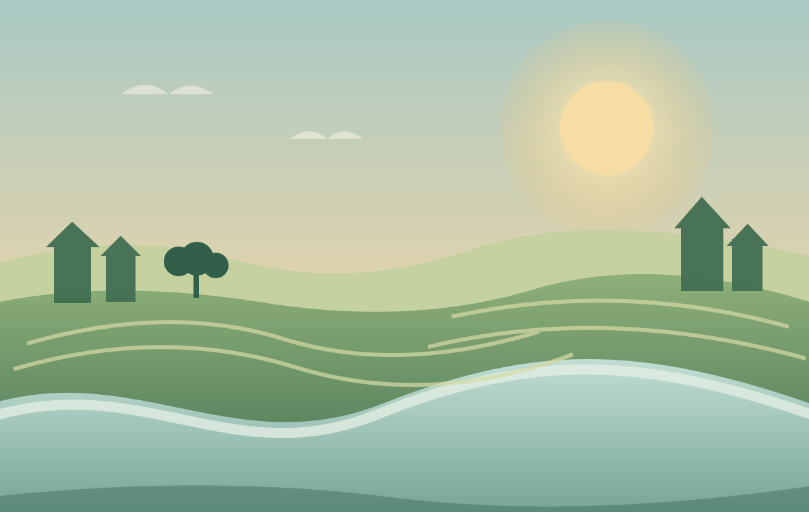
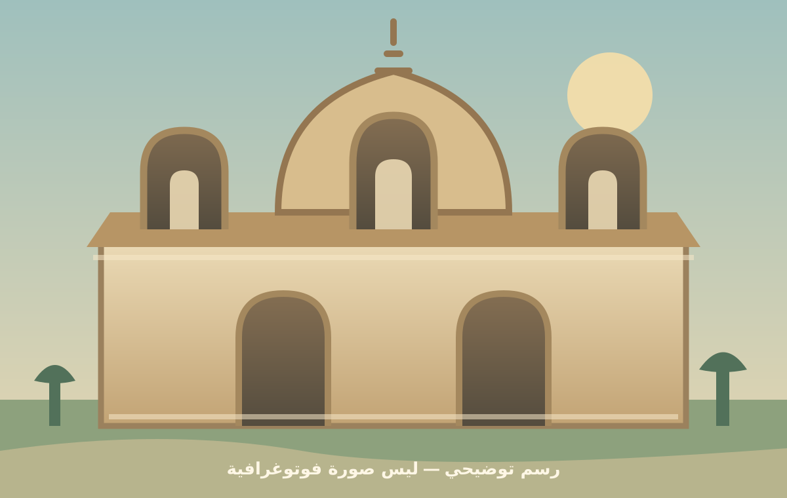

دليلك المحلي في مكان واحد
كل حاجة في بيلا،
أقرب ليك.
دليلك الرقمي لخدمات وأماكن مدينة ومركز بيلا.
ابحث، اكتشف، وافتح طريقك بخطوة واحدة.
جرّب:
معلومات محلية مع روابط المصادر•اتجاهات مباشرة على Google Maps
مدينة بيلاكفر الشيخ

افتح موقع بيلا على Google Maps ↗رسم فني مستوحى من بيئة الدلتا — الخريطة الفعلية في القسم التالي.
✦
بيلامحافظة كفر الشيخ
دلتا النيلمعلَم محلي وتراث حي
✳
✦
دليلك يبدأ من هنااكتشف الخدمات من حولك
✳
بيلا، بين إيديكمن أهلها.. ولأهلها
—مكان في الدليل
14تصنيف خدمي
مصادرلكل معلومة موثقة
افتح خريطة بيلا ↗
الدليل بين إيديك
افتح الخريطة ←تدور على إيه؟
اختار التصنيف، وهتلاقي كل الأماكن المتاحة في بيلا.
بنجهّز دليل بيلا…
⌕
لا توجد نتائج في هذا التصنيف
المعلومات المنشورة حاليًا محدودة، وتُضاف أماكن أخرى بعد توثيق بياناتها.
افتح خريطة بيلا ↗خريطة بيلا
بيلا على Google Maps ↗استكشف موقع المدينة
رابط كل جهة يفتح موقعها على Google Maps مباشرة.
الخريطة من OpenStreetMapالمواقع ذات الإحداثيات الدقيقة فقط تظهر هنا
حكاية مكانأهلاً بيك
رابط الخريطة يفتح الموقع الذي شاركته. رسومات الموقع توضيحية وليست صورًا فوتوغرافية للمعالم.
أهلاً بيك
في بيلا.
بيلا مدينة ومركز في محافظة كفر الشيخ، وبين شوارعها وحكاياتها معالم تستحق التعرف عليها. «بيلا بين إيديك» يجمع روابط الأماكن والمعلومات المحلية في واجهة واحدة.
من تراث المدينة
مسجد العارف بالله سيدي سالم البيلي أبو غنام يعود إنشاؤه إلى نحو 700هـ. افتُتح بعد أعمال الترميم في فبراير 2025.
المصدر: محافظة كفر الشيخ ↗
تصميم توضيحيمسجد تاريخي في بيلامسجد أبو غنام
⌖ بيلا · كفر الشيخ
للحالات الطارئة
أرقام مهمة.. خليك قريب منها
✚الإسعاف123↗
◈شرطة النجدة122↗
♨الحماية المدنية180↗
الأرقام وفق دليل الخدمات بمحافظة كفر الشيخ. راجعها دوريًا.
⌖
بيلا · كفر الشيخ
افتح Google Maps ↗
ابدأ رحلتك من خريطة المدينة
افتح رابط Google Maps الذي شاركته للتعرّف على موقع بيلا والوصول إليها.
ببساطة
من المعلومة لحد باب المكان
01⌕ابحث أو اختاراكتب اسم خدمة أو اختار تصنيف.
02⌖اعرف المكانشوف العنوان والتفاصيل المتاحة.
03↗اتصل أو اتحركافتح الاتجاهات على خرائط جوجل.